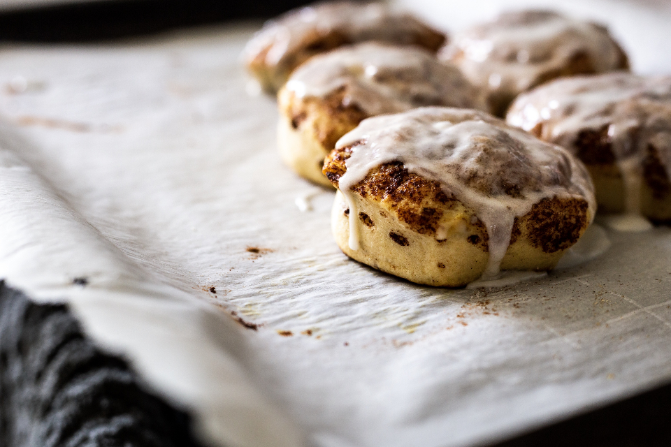
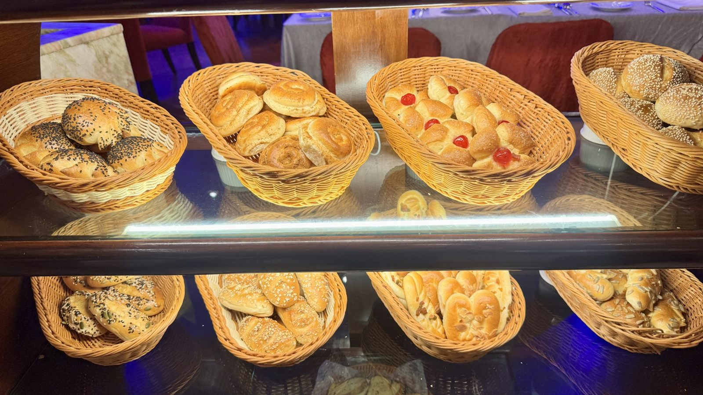
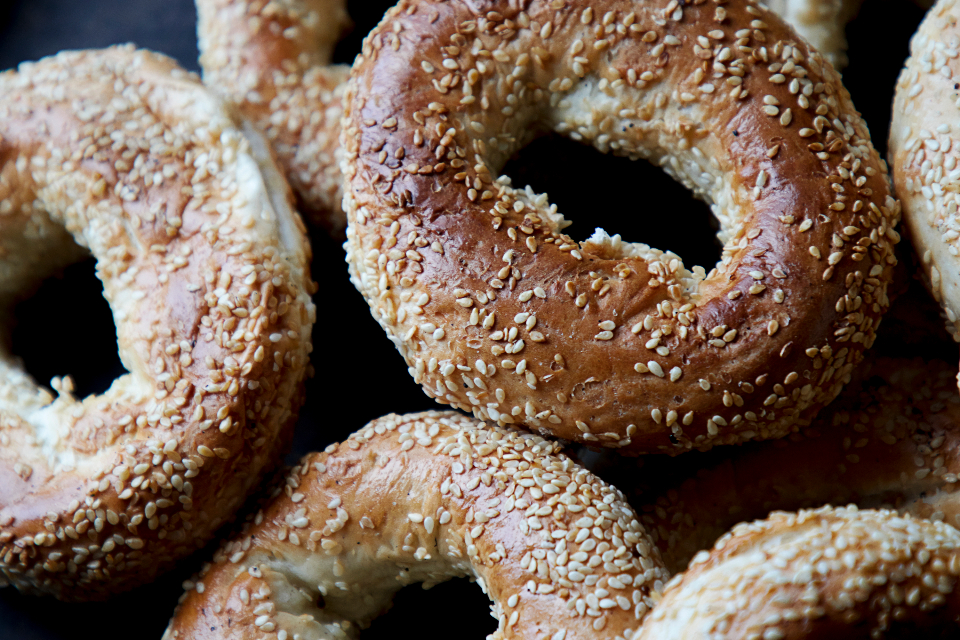
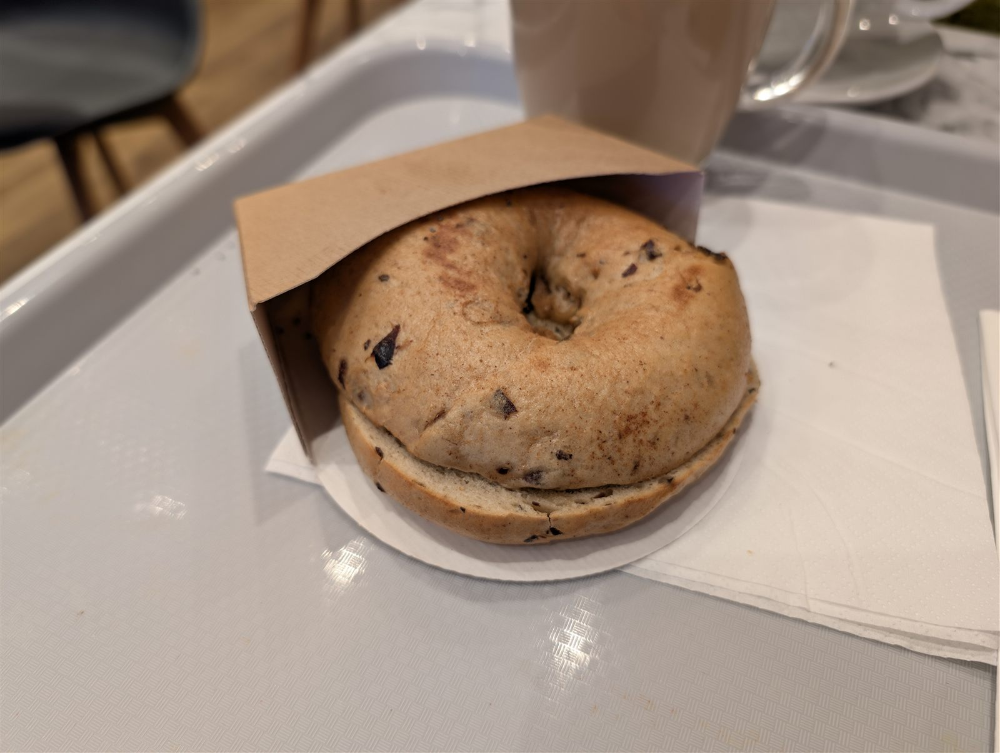
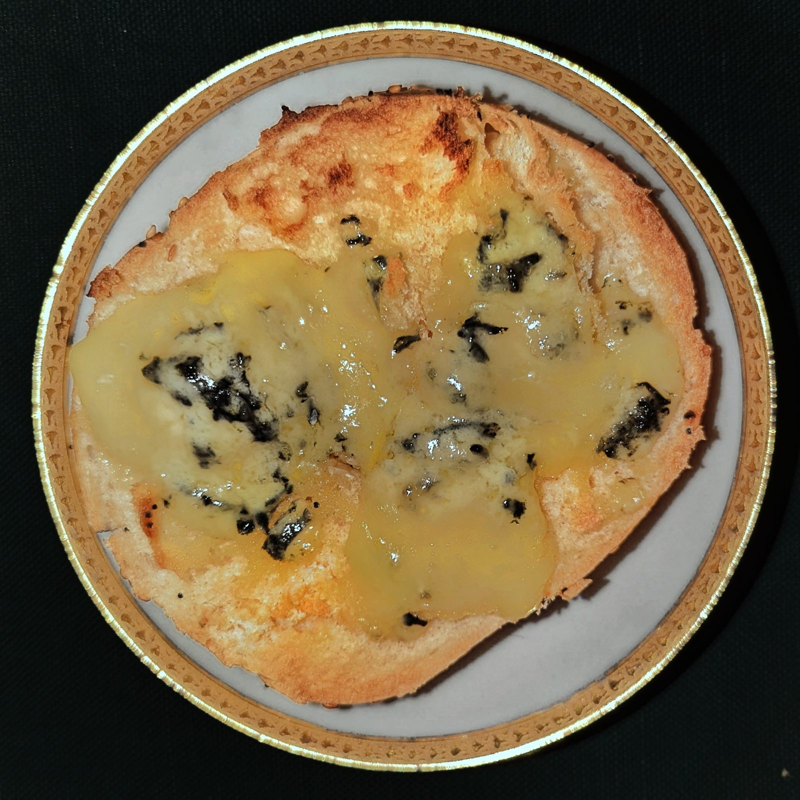

クロワッサン&焼き菓子

クロワッサン
バターの香りがふわりと広がる一枚。時間が経ってもおいしいと評判です。

シナモンロール
程よい甘さと楽しい食感で、リピーターの心をつかむ一品です。
木下製パン所には、看板のベーグルをはじめ、クロワッサンやオリジナルパンが並びます。品揃えは日によって変わります。

木下製パン所のパンは、毎日その場で焼き上げています。オリジナルパンの種類も豊富で、「選ぶのに迷う」というお声をいただくほど。棚を眺めながら、その日出会える一枚を探す時間もお楽しみください。
木下製パン所の看板商品。しっかりもちもちとした食感で、「パサパサしたベーグルが苦手だった」という方からも支持されています。

常連のお客様が「あれば必ず買う」という一品。和の塩昆布とベーグル生地の組み合わせが、この店らしい個性です。

程よい甘さと楽しい食感で、リピーターの多い一品です。お客様からいただいた感想はお客様の声のページでもご紹介しています。

食事系ベーグルの代表格。オニオングラタンスープを思わせる、香ばしい味わいが楽しめます。
バターの香りがふわりと広がる一枚。時間が経ってもおいしいと評判です。

程よい甘さと楽しい食感で、リピーターの心をつかむ一品です。
「本日のトースト」は、日によって内容が変わる日替わりメニュー。ある日はレーズントーストにカレー風味のラタトゥイユ風の具材をのせた一枚が登場するなど、その日の気分で仕立てが変わります。ピザトーストやクリームパンなど、軽食感覚で楽しめる一枚もそろっています。
夏になると登場する「すいか食パン」は、見た目の可愛さだけでなく味も好評。「食べてもめちゃくちゃ美味しくてビックリ」というお声もいただいています。登場時期などの最新情報はInstagramでご確認ください。
一部の写真はフリー素材のイメージです。実際の店内・お料理写真は貴店ご提供のものに差し替えます。